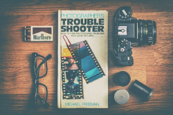

Nie samą książką człowiek żyje, dlatego w przerwach między kolejnymi lekturami warto obejrzeć sobie jakiś dobry film. Na co masz dzisiaj ochotę? Kino akcji, kryminał z dreszczykiem, komedię romantyczną, dramat czy może horror?
Jeśli masz ochotę dotknąć nadprzyrodzonych zjawisk, w tej kategorii znajdziesz książki, które zmienią Twój sposób patrzenia na otaczający nas świat.
Parapsychologia zajmuje się tą częścią naszego życia, która wymyka się racjonalnemu umysłowi. Ezoteryka zaś to wiedza tajemna, duchowa, sytuująca się poza nauką i tradycyjnym postrzeganiem rzeczywistości.
eBooki czyli książki elektroniczne to dział dla czytelników, którzy swoją biblioteczkę noszą zawsze przy sobie.

Podstawą każdej efektywnej pracy jest dobra organizacja zadań. Czy cierpisz na ciągły brak czasu?
Wśród książek, które w niej znajdziesz tutaj są tytuły dla zainteresowanych motoryzacją, pasjonatów sportów, fotografii, wędkarstwa i wielu innych dziedzin.
XXI wiek udostępnił nam cudowne narzędzia i techniki...
Czym dla Ciebie jest muzyka? Czy Ty też masz ją zawsze przy sobie?
Atlasy przyrodnicze - jeśli marzy Ci się rozpoznawanie gatunków flory i fauny, sięgnij koniecznie po jeden z atlasów przyrodniczych, jakie dla Ciebie mamy.
Jesteś tradycjonalistą i nie wyobrażasz sobie spotkania ze znajomymi lub wieczoru z dzieckiem bez dobrej planszówki? A może każdą wolną chwilę spędzasz na rozpracowywaniu najnowszych gier komputerowych?
Nazwa beletrystyka pochodzi z języka francuskiego i oznacza literaturę piękną, czyli tak uwielbianą przez Czytelników fikcję.
Szukasz gier komputerowych lub na konsole? Interaktywnego kursu języka angielskiego lub profesjonalnego translatora? Programu do powtórek przed egzaminami w szkole?